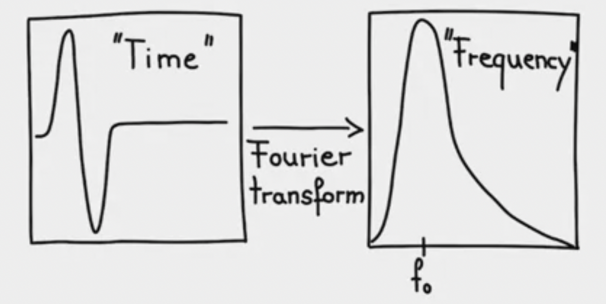
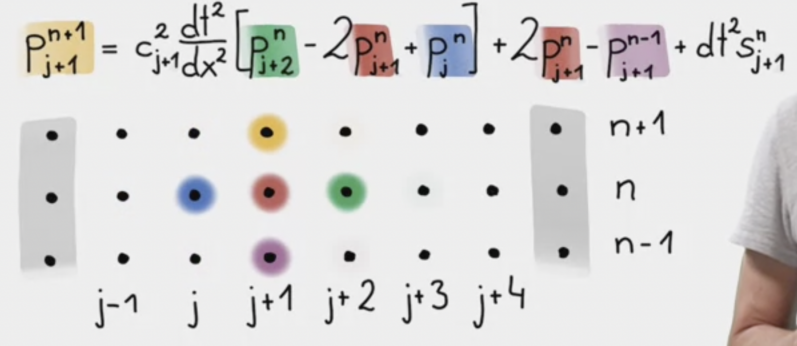

Acoustic/scalar wave equation \partial^{2}_{t} p = c^{2} \Delta p +s
where p is pressure, \Delta is the Laplacian operator, containing second derivatives in space namely \partial^{2}_{x} p + \partial^{2}_{y} p + \partial^{2}_{z} p, c is the propagation velocity, and s is the source term.
p is a function of space x and time t. c is space-dependant but does not depend on time. s depends on both space and time.
This represents for instance propagation of sound waves.
Space is discretized horizontally by dots. Distance between dots is dx. Index each dot by j.
Modify continuous x to be x_{j} = jdx, j = [0,j_{max}].
Time is discretized vertically the same way. Distance between dots is dt. Access time with \cdots, n-1, n, n+1, \cdots.
t_n = ndt, n = [0, n_{max}].
Consequence for fieldsMove from continuous form p(x,t) to discrete form p_{j}^{n}
p(x_{j}, t_{n} + dt) \rightarrow p_{j}^{n+1}.
Finite difference for wave equationWave equation on 1D: \partial^{2}_{t} p(x,t) = c^{2}(x) \partial^{2}_{x} p(x,t) +s(x,t)
\partial^{2}_{t} p(x,t) \rightarrow \dfrac{p_{j}^{n+1} - 2p_{j}^{n} + p_{j}^{n-1}}{dt^{2}}
\partial^{2}_{x} p(x,t) \rightarrow \dfrac{p_{j+1}^{n} - 2p_{j}^{n} + p_{j-1}^{n}}{dx^{2}}
\implies \dfrac{p_{j}^{n+1} - 2p_{j}^{n} + p_{j}^{n-1}}{dt^{2}} = c^2 \dfrac{p_{j+1}^{n} - 2p_{j}^{n} + p_{j-1}^{n}}{dx^{2}} + s_{j}^{n}
\implies p at point j is defined at 3 different times, n+1,n,n-1
\implies Extrapolation problem. Isolate p at j for n+1 (future), and put everything else on the right hand side
\implies p_{j}^{n+1} = c_{j}^{2} \frac{dt^{2}}{dx^{2}}[p_{j+1}^{n} - 2p_{j}^{n} + p_{j-1}^{n}] + 2p_{j}^{n} - p_{j}^{n-1} + dt^{2}s_{j}^{n}, which is called fully explicit scheme because we can write the future based on what we know in the present and the past.
Set the pressure to zero at the edges. Reflects a perfectly reflecting boundary – energy that goes to the sides will come back in.
p(x = 0,t) = 0
p(x = x_{max},t)=0
Initial conditionsp(x, t = 0) = 0
\partial_{t}p(x, t=0) = 0
Source termsIf we solve pde, often make use of delta functions \begin{equation} \delta(x)=\begin{cases} \infty, & \text{at $x=0$}.\\ 0, & \text{otherwise}. \end{cases} \end{equation}
The integral is equal to one
\int_{\infty}^{\infty} \delta(x)dx =1
Compare our numerical solution with that of analytic, using Green’s function.
Box \delta-generating function (space)\begin{equation} \delta_{bc}(x)=\begin{cases} \frac{1}{dx}, & \text{for $x \leq\frac{dx}{2}$}.\\ 0, & \text{otherwise}. \end{cases} \end{equation}
As dx \rightarrow 0, this function converges to the delta function.
Gaussian \delta-generating function (time)\delta_{a}(t) = \dfrac{1}{\sqrt{2\pi a}}e^{-t^{2}/2a}
As a \rightarrow 0, this function converges to the delta function
\implies finite approximation have the properties of integral equal to one
\int_{-\infty}^{+\infty} \delta_{bc} (x) dx = 1
\int_{-\infty}^{+\infty} \delta_{a} (x) dx = 1
Dirac delta function \delta(x)\int_{-\infty}^{\infty} f(x) \delta(x-a) = f(a)
Using discrete version of the Dirac delta function allows us to numerically approximate Green’s function, and compare with analytical solutions.
Source-time functionWe can denote the grid point, along space, to be j_s to indicate the source that corresponds to where discrete version of delta function is injected. (the point where we introduce the source term)
In the beginning everything is at rest, and then progressively during the simulation, we will start injecting energy at this particular point.
s(x,t) = \delta(x-x_{s})f(t)
Often use first derivative of Gaussian function:
f(t) = -8f_{0}(t-t_{0})e^{-\frac{1}{4f_{0}^{2}}(t-t_{0})^{2}}. Think has an error. Should be f(t) = -8f_{0}(t-t_{0})e^{-(4f_{0})^{2}(t-t_{0})^{2}}
where f_0 is the dominat frequency – often used for a wave simulation.
What is dominant frequency? E.g. in spectral space, taking the fourier transform, obtain the amplitude spectrum of that function. It containes a lot of frequencies, but the dominant energy is at frequency f_0.

Why use the first derivative of a Gaussian function to initialize the source-time function if we want a Gaussian waveform as solution to the 1D wave equation? > The resulting signal is an integral of the source time function.
Setting up the space-time discretization.
Key questions are: + what are the spatial wavelengths? + always make use of the relation between velocity, wave number and wavelength + c = \omega/k = \lambda/T, where \omega is the temporal frequency, k is wavenumber, \lambda is the wavelength, and T the period.
A physical problemc = \lambda/T = \lambda f
c = 343 m/s
f_{1} = 20 Hz \rightarrow \lambda_{1} = 17m
f_{2} = 50 Hz \rightarrow \lambda_{2} = 7m
Number of points per wavelength: Discretize the smallest spatial wavelength in the field i.e., 50Hz, 7m.
\implies smallest spatial wavelength
\implies appropriately sampled.
Similarly, appropriate sampling in time.
Let dx = 0.5m and dt = 0.0012s.
Spatial domain of 10km, and inject a source-time function with shape of the first derivative of a Gaussian function.
Recap finite-difference approximation of the 1D wave equation:
\implies p_{j}^{n+1} = c_{j}^{2} \frac{dt^{2}}{dx^{2}}[p_{j+1}^{n} - 2p_{j}^{n} + p_{j-1}^{n}] + 2p_{j}^{n} - p_{j}^{n-1} + dt^{2}s_{j}^{n}
Graphically, we start at the second point because we dont calculate points at the boundaries.

Then we sequentially move to j+4.



Number of grids is 10,000
Max domain is 10,000
Grid points distance dx is max domain divided by (number of grids minus 1).
Max time domain is 1,000.
Grid points distance dt is set at 0.02.
Using first derivative of Gaussian function: + Dominant frequency f_0 is 25 + Source time shift t_0 is 4
If we increase the frequency by twice, then we are decreasing the spatial wavelength by half + c = \lambda f + It also means we have less grid points per wavelength. Why? Because dx stays the same.
What happens if we increase the frequency? The waveform will disintegrate – called numerical dispersion.
What happens if we increase the time increment dt? + Solution exploded.
# Import Libraries
# ----------------------------------------------
import numpy as np
import matplotlib
matplotlib.use("nbagg")
#"nbagg" enables interactive figures in a live IPython notebook session.
import matplotlib.pyplot as plt
# Sub-plot Configuration
# ----------------------
from matplotlib import gridspec
# Specifies the geometry of the grid that a subplot will be placed. The number of rows and number of columns of the grid need to be set.
# Ignore Warning Messages
# -----------------------
import warnings
warnings.filterwarnings("ignore")
#========================
# Parameter Configuration
# -----------------------
nx = 10000 # number of grid points in x-direction
xmax = 10000 # physical domain (m)
dx = xmax/(nx-1) # grid point distance in x-direction
c0 = 334. # wave speed in medium (m/s)
isrc = int(nx/2) # source location in grid in x-direction
nt = 1001 # maximum number of time steps
# we use 1,0001, because later on, we will loop fromm 0,1,...,1000
dt = 0.0010 # time step
# Source time function parameters
f0 = 25. # dominant frequency of the source (Hz)
t0 = 4. / f0 # source time shift
# Plot Source Time Function
# -------------------------
# Source time function (Gaussian)
# -------------------------------
src = np.zeros(nt + 1)
#produce zero vectors of length nt+1 = 1,002. Not sure why this is necessary, since you already have another src assigned below
time = np.linspace(0 * dt, nt * dt, nt)
#produce a time vector starting from zero, ending with nt*dt = 1.001, with nt grid points (1,001). i wonder why dont we use time = np.linspace(0 * dt, (nt-1) * dt, nt), which will also produce 1,001 grid points, but starting from 0 to 1.
# 1st derivative of a Gaussian
src = -8. * (time - t0) * f0 * (np.exp(-1.0 * (4*f0) ** 2 * (time - t0) ** 2))
#produce a vector of length nt=1,001, corresponding to "time" variable. ie src domain is time, not space
# Plot source time function
# Plot position configuration
# ---------------------------
plt.ion()
#Enable interactive mode
fig1 = plt.figure(figsize=(10, 6))
gs1 = gridspec.GridSpec(1, 2, width_ratios=[1, 1], hspace=0.3, wspace=0.3)
#matplotlib.gridspec.GridSpec(nrows, ncols, figure=None, left=None, bottom=None, right=None, top=None, wspace=<The amount of width reserved for space between subplots, expressed as a fraction of the average axis width.>, hspace=<The amount of height reserved for space between subplots, expressed as a fraction of the average axis height.>, width_ratios=<Defines the relative widths of the columns.>, height_ratios=None)[source]
# Plot source time function
# -------------------------
ax1 = plt.subplot(gs1[0])
ax1.plot(time, src) # plot source time function
#Recall that time starts from zero, ending with nt*dt = 1.001, with nt grid points (1,001)
ax1.set_title('Source Time Function')
ax1.set_xlim(time[0], time[-1])
ax1.set_xlabel('Time (s)')
ax1.set_ylabel('Amplitude')
# Plot source spectrum
# --------------------
ax2 = plt.subplot(gs1[1])
spec = np.fft.fft(src) # source time function in frequency domain
# computes the one-dimensional n-point discrete Fourier Transform (DFT) with the efficient Fast Fourier Transform (FFT) algorithm [CT].
freq = np.fft.fftfreq(spec.size, d = dt ) # time domain to frequency domain
#Given a window length n and a sample spacing d:
#f = [0, 1, ..., n/2-1, -n/2, ..., -1] / (d*n) if n is even.
#Eg if n is 8, then [0,1,2,3,-4,-3,-2,-1]/(d*8)
#f = [0, 1, ..., (n-1)/2, -(n-1)/2, ..., -1] / (d*n) if n is odd
#eg if n is 9, then [0,1,2,3,4,-4,-3,-2,-1]/(d*9)
ax2.plot(np.abs(freq), np.abs(spec)) # plot frequency and amplitude
ax2.set_xlim(0, 250) # only display frequency from 0 to 250 Hz
ax2.set_title('Source Spectrum')
ax2.set_xlabel('Frequency (Hz)')
ax2.set_ylabel('Amplitude')
ax2.yaxis.tick_right()
ax2.yaxis.set_label_position("right")
plt.show()
# Plot Snapshot & Seismogram
# Initialize empty pressure
# -------------------------
p = np.zeros(nx) # p at time n (now)
#produce vector of zeros of length nx = 10,000
#note that p's domain is space, not time
pold = np.zeros(nx) # p at time n-1 (past)
pnew = np.zeros(nx) # p at time n+1 (present)
d2px = np.zeros(nx) # 2nd space derivative of p
# Initialize model (assume homogeneous model)
# -------------------------------------------
c = np.zeros(nx)
c = c + c0 # initialize wave velocity in model
#produce a vector with a constant value c = 334 of length nx = 10,000
# Initialize coordinate
# ---------------------
x = np.arange(nx)
#produce a vector [0,1,2,...,9999]
x = x * dx # coordinate in x-direction
#produce a vector corresponding to each grid points in space, [0,1*dx,2*dx,...,9999]
# Plot position configuration
# ---------------------------
plt.ion()
fig2 = plt.figure(figsize=(10, 6))
gs2 = gridspec.GridSpec(1,1,width_ratios=[1],hspace=0.3, wspace=0.3)
# Plot 1D wave propagation
# ------------------------
# Note: comma is needed to update the variable
ax3 = plt.subplot(gs2[0])
leg1,= ax3.plot(isrc, 0, 'r*', markersize=11) # plot position of the source in snapshot
up31,= ax3.plot(p) # plot pressure update each time step
#plot p y-axis, while x-axis is space grid. i wonder why we dont put ax3.plot(x,p) instead.
ax3.set_xlim(0, xmax)
ax3.set_ylim(-np.max(p), np.max(p))
ax3.set_title('Time Step (nt) = 0')
ax3.set_xlabel('x (m)')
ax3.set_ylabel('Pressure Amplitude')
plt.show()# 1D Wave Propagation (Finite Difference Solution)
# ------------------------------------------------
#intuition: for each time period, we update the pressure chart above, which is in space domain.
# Loop over time
for it in range(nt):
#loop over grid points across times, nt = 1,001, ie from 0,1,2,...,1000
# 2nd derivative in space
for i in range(1, nx - 1):
d2px[i] = (p[i + 1] - 2 * p[i] + p[i - 1]) / dx ** 2
#at grid point t=0, update second derivative of pressure at space grid 1 (depend on point 2, point 1 and point 0). Continue, until reach space grid 9,998 (depends on point 9999,9998,9997). Note that 9,999 is the last grid (don't be confused by grid value, which is 9,999 x dt = 10,000)
# Time Extrapolation
# ------------------
pnew = 2 * p - pold + c ** 2 * dt ** 2 * d2px
# this is extrapolation scheme with source term zero
# intuitively, given same space grid point i, we update the pressure at time grid point it - denoted by pnew, which depends on p at time it-1 (pold), p at time now (p) and second derivatives at space grid point i
#note that p.size is 10,000
# Add Source Term at isrc
# -----------------------
# Absolute pressure w.r.t analytical solution
pnew[isrc] = pnew[isrc] + src[it] / (dx) * dt ** 2
# why src is divided by dx tho? it's not in the formula. I think we divide src by dx here because of BC generating function. s = bc function * 1st derivative of gaussian function. (bc function: delta(x) = 1/dx if |dx| less than 1/2, 0 otherwise)
# Remap Time Levels
# -----------------
pold, p = p, pnew
# Plot pressure field
# -------------------------------------
if (it % idisp) == 0:
ax3.set_title('Time Step (nt) = %d' % it)
ax3.set_ylim(-1.1*np.max(abs(p)), 1.1*np.max(abs(p)))
# plot around propagating wave
window=100;xshift=25 #wtf do we need this xshift for? it just shift the frame lower. may as well just adjust window?
#having difficulty understanding below. but i know c0 =m/s, while it*dt = s --> multiply both convert time to space
ax3.set_xlim(isrc*dx+c0*it*dt-window*dx-xshift, isrc*dx+c0*it*dt+window*dx-xshift)
up31.set_ydata(p)
plt.gcf().canvas.draw()Wave equation on 1D: \partial^{2}_{t} p(x,t) = c^{2}(x) \partial^{2}_{x} p(x,t) +s(x,t)
Assume no source term:
\partial^{2}_{t} p(x,t) - c^{2}(x) \partial^{2}_{x} p(x,t) = 0
Initial conditions
p(x,t=0)=p_{0}(x) \partial_{t}p(x,t=0)=0
Analytical solution \implies p(x,t) = 1/2p_{0}(ct-x) +1/2p_{0}(ct+x)
What happens if the intial conditions p(x=0,t=0)=C where C is constant?
There might be problems, such that an initial condition contain very high frequencies, that are not supported by numerical algorithm.
Assume with source term:
\implies Green function to find analytical solutions.
Delta functions:
\begin{equation} \delta(x)=\begin{cases} \infty, & \text{at $x=0$}.\\ 0, & \text{otherwise}. \end{cases} \end{equation}
The integral is equal to one
\int_{\infty}^{\infty} \delta(x)dx =1
The solution to source term at x_0 t_0 is the Greens function G(x,t;x_0 , t_0)
\partial^{2}_{t}G(x,t;x_0, t_0) - c^2\partial_{x}^{2}G(x,t;x_0 , t_0) = \delta (x-x_0 )\delta(t-t_0)
The solution contains Heaviside function (integral of delta function):
\begin{equation} H(x)=\begin{cases} 0, & \text{at $x<0$}.\\ 1, & \text{at $x \geq 0$}. \end{cases} \end{equation}
Solution for wave equation is an integral of the source time function
Recall the convolution theorem for linear systems. In light of this, consider a differential equation of the form d^{2}u/dx^{2} = f(x) where f is some forcing function, in the domain x\in [0,L]. What is the solution to this equation, given green’s function G(x,x_0)
\implies u(x) = G(x,x_0)*f(x), where * is convolution
If we enter any source time function, we expect the integral of the source time function to propagate away from the source point without any change in waveform.
Benchmarking - we know the analytical solution, quantify the difference between numerical and analytical solution - to verify the accuracy of the former.
Zul’s monologue: Why would we want numerical solution if we already have analytical solution?